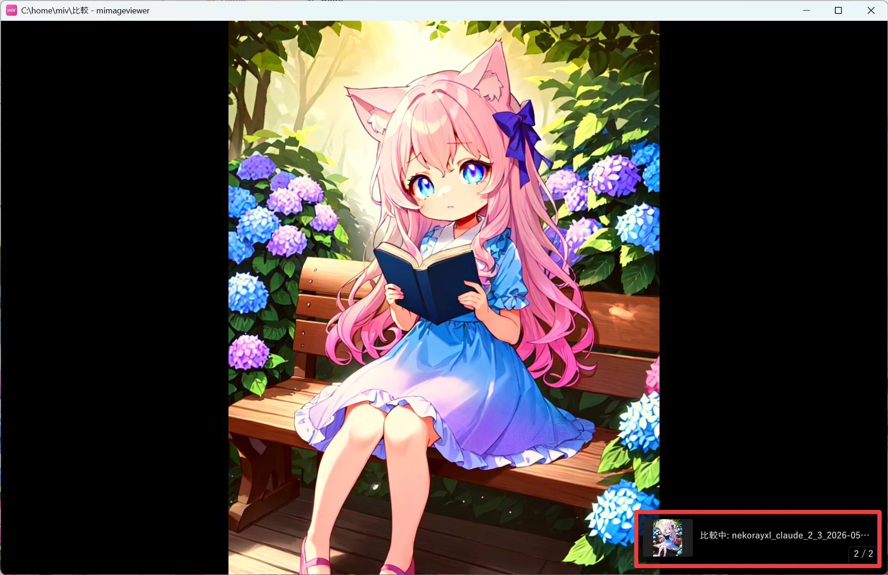
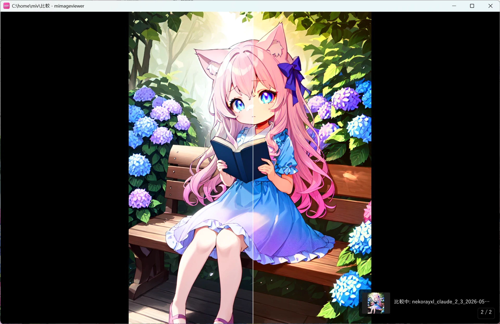
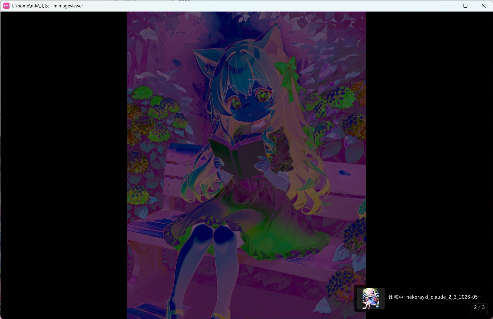

2 枚を並べて比較する
「加工の前後でどう変わったか」「よく似た 2 枚のどちらを残すか」を見比べたいときの機能です。 ボタンではなくキー操作で呼び出すため気づきにくいのですが、覚えるとレタッチや選別が一気にはかどります。
まず比較する 1 枚をピン留めする
比較したい 1 枚目を「比較スロット」に固定（ピン留め）します。X キーを押すだけです。
- フルスクリーン中：表示中の画像・ZIP 内の画像・PDF ページを X でピン留め。もう一度 X で解除。
- サムネイル一覧：画像にカーソルを合わせて X でもピン留めできます。

もう 1 枚と切り替え・重ねて比べる
ピン留め後、別の画像を表示した状態で次のキーを使います。
| キー | 比較の仕方 |
|---|---|
| C | 現在の画像とピン画像を交互に切り替えて表示（パラパラ見比べ） |
| Shift+C | 左右のワイプ比較。画像にカーソルを置くと境界線が現れ、左右端までドラッグできます。タッチでは中央タップで操作表示を出すと境界線も表示されます |
| Alt+C | RGB チャンネル別の色付き差分強調（違うところだけ光る） |


サイズの違う 2 枚を比較すると、ピン画像は現在表示中の画像のサイズに合わせてリサイズされて重なります。
見開き表示中は、画面と同じ中央の間隔を含む見開き全体を比較します。結合後の画像が 8192px を超える場合だけ、全体を同じ比率で縮小します。
ワイプ比較中は、じゃまにならないよう左の補正パネル・右のメタデータパネルが自動的に閉じます。
Alt を押すと、現在の比較結果の全体像をナビゲータで確認できます。